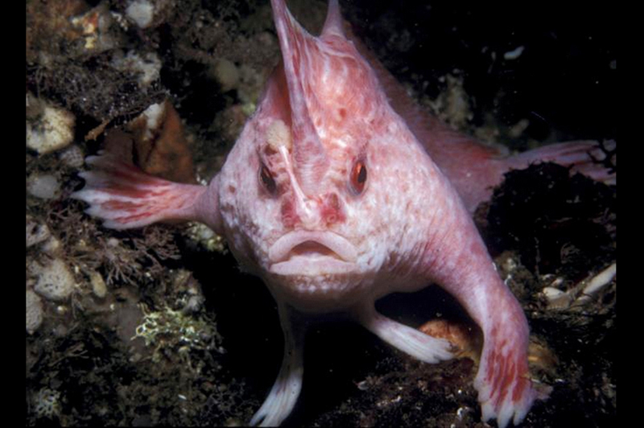
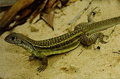
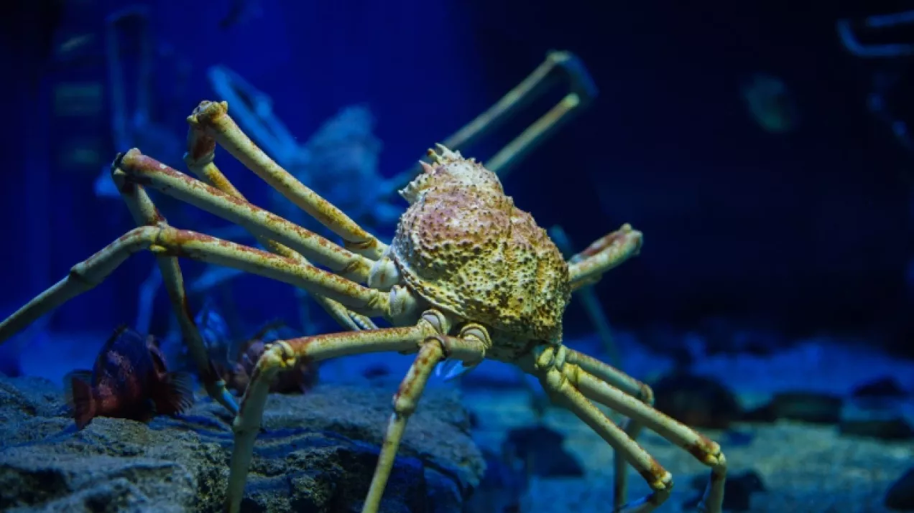
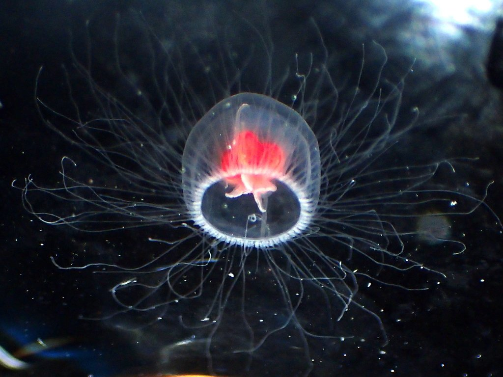
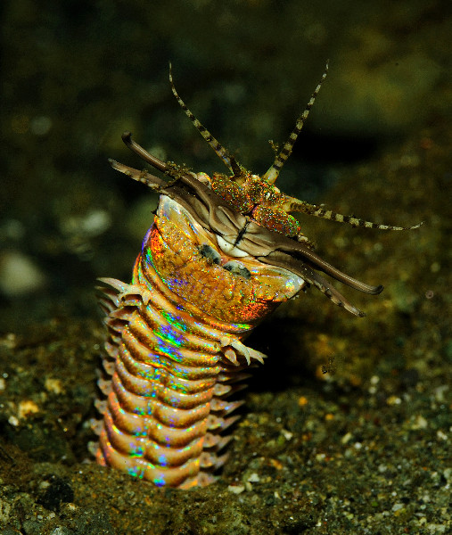
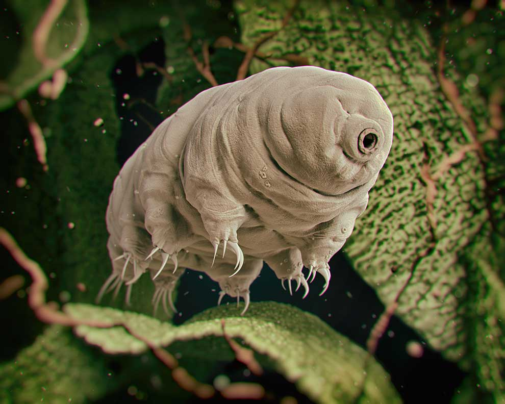
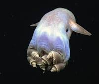

(Brachiopsilus dianthus)to gatunek ryby z rodziny Brachionichthyidae. Podobnie jak reszta członków tej rodziny, ich płetwy mają kształt dłoni, co ma tylko dziewięć gatunków ryb morskich3, służą one do poruszania się po dnie morskim zamiast pływania Występuje na południu wyspy Tasmanii, Australii. Żyje w strefie przydennej morza. Uważa się, że jest to gatunek potencjalnie zagrożony, ponieważ występuje bardzo rzadko i niewiele wiadomo na temat jego ekologii. Ryby te poruszają się bardzo powoli i wydzielają podczas tego toksyny

Leiolepis ngovantrii – gatunek jaszczurki z rodziny agamowatych (Agamidae), który składa się wyłącznie z samic, rozmnażających się na drodze partenogenezy. Jaszczurkę po raz pierwszy odkryto w wietnamskim barze w prowincji Bà Rịa-Vũng Tàu. Nazwa gatunku pochodzi od herpetologa Ngô Văn Trí z Wietnamskiej Akademii Nauki i Technologii.

Japoński krab pająk (Macrocheira kaempferi) to gatunek morskiego kraba żyjący w wodach wokół Japonii. Japoński krab pająk ma największą rozpiętość nóg ze wszystkich znanych stawonogów, osiągając do 3,7 m od pazura do pazura. Ich długość ciała może osiągnąć 40 cm, a cały krab może ważyć do 19 kg

Występuje u wybrzeży Japonii, w Oceanie Spokojnym oraz w atlantyckich wodach u wybrzeży Panamy, Florydy, Hiszpanii oraz Włoch. Turritopsis dohrnii rozwija się z orzęsionej wolno pływającej larwy określanej mianem planuli. Po przytwierdzeniu do podłoża, z planuli rozwija się stadium polipa, który poprzez rozmnażanie bezpłciowe tworzy kolonie. Z podziału polipa rozwija się rozmnażające się płciowo stadium meduzy. Dorosłe meduzy mają bardzo małe rozmiary, są przezroczyste z wyjątkiem znajdujących się wewnątrz ciała komórek światłoczułych, które mają intensywnie czerwony kolor.
Turritopsis dohrnii posiada niezwykłą zdolność do powrotu ze stadium płciowo dojrzałego do niedojrzałego, nawet wielokrotnie. W sytuacji stresowej zarówno młoda jak i dojrzała meduza „odwraca” swój cykl życiowy i stopniowo przekształca się w kolonię polipa. Ta umiejętność czyni ją biologicznie nieśmiertelną, przez co została nazwana „nieśmiertelną meduzą”.

Eunice aphroditois to bentosowy robak o szczecinie ciepłych wód morskich. Zamieszkuje głównie Ocean Atlantycki, ale można go również znaleźć w Indo-Pacyfiku .Jego długość waha się od mniej niż 10 cm do 3 m. Jego egzoszkielet ma szeroką gamę kolorów, od czerni do fioletu. Ten gatunek jest drapieżnikiem zasadzkowym; poluje, zakopując całe ciało w miękkim osadzie na dnie oceanu i czekając, aż jego czułki wykryją zdobycz. Następnie uderza ostrymi ustami. Można go również znaleźć wśród raf koralowych.

Niesporczaki to typ pospolitych, bardzo małych zwierząt bezkręgowych, zaliczanych do pierwoustych (Protostomia). Zasiedlają rozmaite siedliska, głównie środowiska wodne lub wilgotne. Znanych jest ponad 1000 gatunków niesporczaków. Długość ich ciała waha się w przedziale 0,1–1,2 mm, kształtu walcowatego, ze słabo wyodrębnioną głową i 4 parami nieczłonowanych tułowiowych odnóży, zakończonych pazurkami lub przylgami
Niesporczaki uznawane są za najbardziej odporne na warunki zewnętrzne ze znanych organizmów. W stanie anabiozy mogą przetrwać w temperaturach od prawie zera absolutnego do ponad 150 °C, znoszą 1000 razy silniejsze promieniowanie jonizujące niż jakiekolwiek inne zwierzę, ciśnienie 6000 atmosfer, potrafią również przetrwać ponad 100 lat bez wody[8], a nawet w przestrzeni kosmicznej

Występują na głębokości 400–4800 m p.p.m. Angielska nazwa Dumbo octopus nawiązuje do słonia Dumbo, ponieważ Grimpoteuthis, jak inne głębinowe frędzlikowce, posiadają na płaszczu dwie płetwy – u tego rodzaju przypominające uszy słonia. W trakcie 10-letniego programu Census of Marine Life największy zbadany osobnik Grimpoteuthis mierzył 1,8 m długości i ważył około 5,9 kg. Przedstawiciele rodzaju przebywają zwykle bezpośrednio nad dnem oceanicznym lub blisko niego.